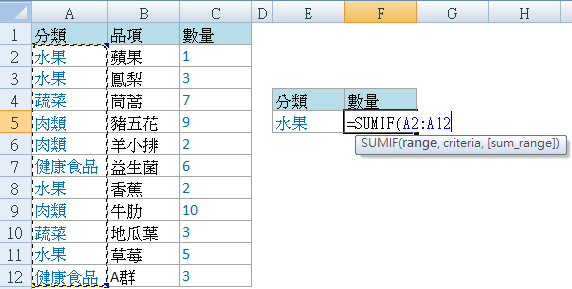
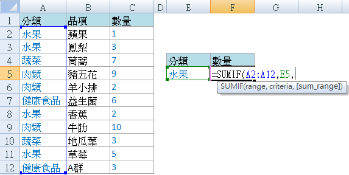
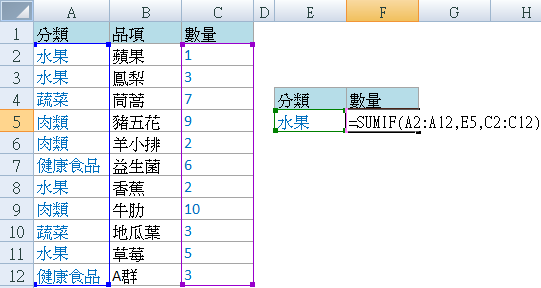
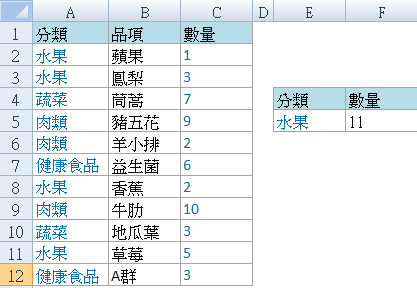
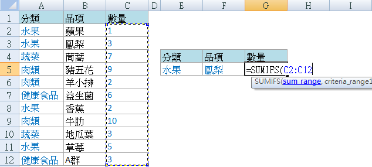
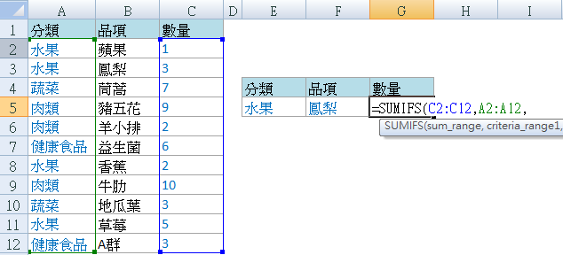
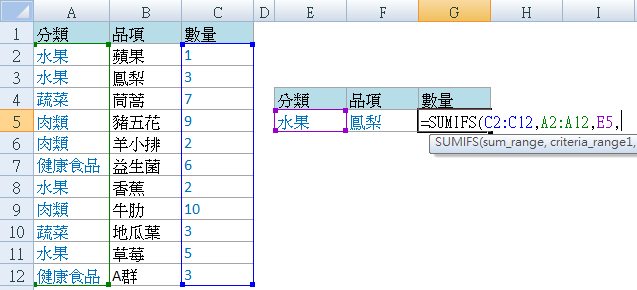
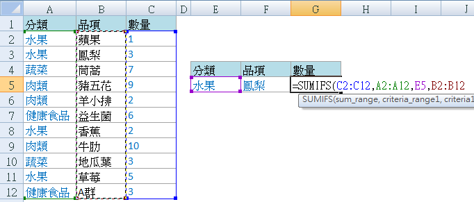
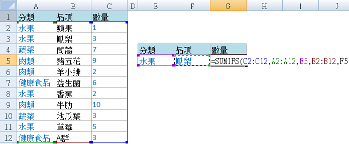
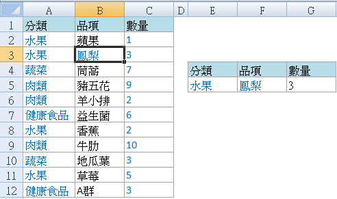

豪拜兒|提升Excel效率：掌握SUMIF與SUMIFS函數的使用技巧

在 Excel 中，除了基本的 SUM 函數外，還有兩個非常實用的「兄弟」函數：SUMIF 和 SUMIFS。這兩個函數的名稱已經很直觀地告訴我們它們的作用，讓我們來看看它們如何幫助我們更精確地進行數字求和操作。
首先是 SUMIF 函數，這個函數可以根據一個條件範圍來計算符合指定條件的數字總和。例如，當我們需要計算某一類別的數量時，就可以使用 SUMIF 函數來快速獲取結果。舉例來說，假設我們有一個包含水果類別和對應數量的表格，我們可以使用 SUMIF 函數來計算所有水果的總數量。
接下來是 SUMIFS 函數，這個函數不僅可以應用單一條件，還可以同時應用多個條件來進行數字求和。這使得我們可以更靈活地進行數據分析，例如同時滿足類別是水果且名稱是鳳梨的數量求和。SUMIFS 函數的語法更為靈活，允許我們按需指定多個範圍和對應的條件，這樣可以更精確地定位並計算我們需要的數值。
這些函數的應用不僅限於數據分析專業人士，對於日常工作中需要進行數字統計和報表製作的人來說同樣重要。通過掌握這些函數，您可以更加高效地處理數據，提升工作效率，並確保計算的準確性。無論是財務報表的總計算、庫存管理的統計還是銷售分析的數字匯總，這些函數都能為您帶來便利和價值。
在接下來的範例中，我們將具體演示如何使用 SUMIF 函數來計算特定條件下的數量，並展示 SUMIFS 函數如何應用多個條件來精確計算數字。讓我們一起深入了解和學習這些實用的 Excel 函數，提升我們的數據處理能力吧！
使用 SUMIF 函數計算特定條件下的數量
假設我們有一個表格，包含了不同類別的產品和對應的數量，我們想計算所有屬於「水果」類別的產品數量。
步驟一、輸入 SUMIF 函數：在選擇的儲存格中輸入 SUMIF 函數，例如：
=SUMIF(A2:A12, E5, C2:C12)
- A2:A12：條件範圍，這裡是產品類別的範圍。

- E5：指定的條件，這裡是要計算「水果」類別的數量。

- C2:C12：數量範圍，這裡是相應的產品數量。

步驟二、按 Enter 鍵計算
按 Enter 鍵完成函數輸入，Excel 將會計算符合條件的數量並顯示在所選儲存格中。

使用 SUMIFS 函數應用多個條件計算數量
現在，我們想計算同時符合多個條件的產品數量，例如屬於「水果」類別且名稱是「鳳梨」的數量。
步驟一、輸入 SUMIFS 函數：在選擇的儲存格中輸入 SUMIFS 函數，例如：
=SUMIFS(C2:C12, A2:A12, E5, B2:B12, F5)
- C2:C12：數量範圍，這裡是產品數量的範圍。

- A2:A12：第一個範圍，這裡是產品類別的範圍。

- E5：第一個條件，指定產品類別為「水果」。

- B2:B12：第二個範圍，這裡是產品名稱的範圍。

- F5：第二個條件，指定產品名稱為「鳳梨」。

步驟二、按 Enter 鍵計算
按 Enter 鍵完成函數輸入，Excel 將會計算同時滿足所有條件的數量並顯示在所選儲存格中。

小結
這些操作步驟將幫助您有效地使用 SUMIF 和 SUMIFS 函數來進行數字求和，無論是在日常工作中還是數據分析任務中。
心得
為什麼需要學習 Excel？
學習 Excel 不僅能夠提升數據處理和分析能力，還能顯著提高工作效率。無論是進行基本的數據整理，還是進階的數據分析，Excel 都是不可或缺的工具。掌握 Excel，將能夠提升工作效率，通過快捷鍵和自動化功能，減少重複性工作。此外，將增強數據分析能力，使用各種公式和圖表，輕鬆分析和展示數據。熟練掌握 Excel 也能增加就業競爭力，這是許多職位的基本要求，尤其是在財務、數據分析和行政等領域。
系統地學習 Excel
如果想要更系統地學習 Excel，或是希望進一步提升自己的 Excel 技能，可以參考以下學習資源：在 Hahow 平台上，可以找到許多優質的 Excel 課程，推薦以下初級和進階課程，從基礎開始，逐步深入掌握各種實用技巧。
為什麼選擇 Hahow 線上課程平台？
Hahow 是一個受歡迎的線上課程平台，提供各種專業課程。選擇 Hahow，可以享受靈活的學習方式，隨時隨地都可以學習，非常適合忙碌的工作人士。平台上的課程由專業講師授課，內容豐富且實用。還可以與其他學員交流學習心得，共同進步。相比坊間動輒上萬元的課程，Hahow 的線上課程不僅省去交通的舟車勞頓，更有價格實惠的絕對優勢。
不要錯過這個提升自我的機會，立即註冊 Hahow，為職業生涯加分！
-
點擊圖片前往 Hohow，學習更多線上課程